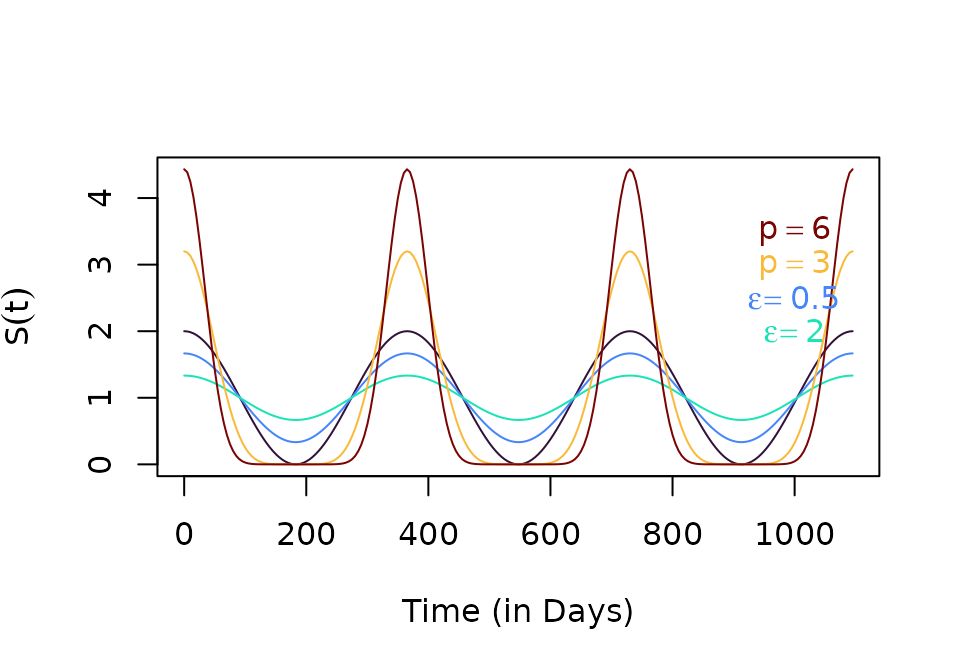

As part of the plug-and-play modular design for
ramp.xds, each dynamical component
includes a trivial model that has no variables. The outputs required by
other components are passed as a trace function. These
trace functions have three parts:
a mean value, or a scaling argument
a function that returns a F_seasonal signal, configured with a line in the appropriate options list,
F_season = function(t){...}a function that returns a F_trend, configured with a line in the appropriate options list,
F_trend = function(t){...}
Trivial Modules
The trivial modules each returns different values:
-
The trivial L-component module is set up by
create_Lpar_trivial.The functionF_emerge()returnsLambda*F_season(t)*F_trend(t).To override the defaults,Loptsmust be a named list that sets the values of the elements:Lambda = c(...)is theF_season = function(t){...}F_trend = function(t){...}
-
The trivial MYZ-component module is setup by
create_MYZpar_trivial.The values will return eitherF_fqZorF_eggs-
Both
F_fqZandF_eggsuse the same seasonality and trend functions:F_season = function(t){...}F_trend = function(t){...}
-
the function
F_fqZ()returnsf*q*Z*F_season(t)*F_trend(t). To configure,MYZoptsshould be a named list that sets the values of the elements:f = c(...)q = c(...)Z = c(...)
-
the function
F_eggs()returnseggs*F_season(t)*F_trend(t); to override the defaults,MYZoptsmust be a named list that sets the values of the elements:eggs = c(...)
-
-
The trivial X-component module for human / host infection and immunity is set up by
create_Xpar_trivial.F_XcallsF_Hand then returnsH*kappa*F_season(t)*F_trend(t)F_His configured inxds_setupby passingHPop = ...-
To configure
F_X,Xoptsmust be a named list that sets the values of the elements. The values ofF_Xshould be in the intervalkappa = c(...)F_season = function(t){...}F_trend = function(t){...}
make_function
To make it easy to conduct thought experiments,
ramp.xds has developed a system for
setting up functions:
make_function(opts)as a tool for generating functions with the right properties.makepar_F_*is an informal function family to construct parameter / options formake_functionmethods.
Seasonality
A constructor for seasonality functions drawn from a generalized
family involving trigonometric functions is returned by
make_function.sin with the associated
makepar_F_sin that returns functions of the form:
or
normis a normalizing constantor
phasesets the timing of the peakor
flooris a shape parameter: increasing the values of reduces the varianceor
pwis a shape parameter.
p1 = makepar_F_sin()
S1 <- make_function(p1)The default normalizing constant is so that if is multiplied by some other constant, the average daily value of the function over a year is
integrate(S1, 0, 365)$val## [1] 365
tt <- seq(0, 3*365, by=5)
plot(tt, S1(tt), type ="l", xlab = "Time (in Days)", ylab = expression(S(t)))
p2 = makepar_F_sin(phase=120)
S2 <- make_function(p2)
plot(tt, S1(tt), type ="l", xlab = "Time (in Days)", ylab = expression(S(t)))
lines(tt, S2(tt), col = "blue")
The function can return a vector of functions, each one configured as if
p3 = makepar_F_sin(phase = c(0,120), N=2)
S3 <- make_function(p3)
s3 <- S3(tt)
plot(tt, s3[1,], type ="l", xlab = "Time (in Days)", ylab = expression(S(t)))
lines(tt, S1(tt), col = "yellow", lty=2)
lines(tt, s3[2,], col = "blue")
lines(tt, S2(tt), col = "orange", lty=2)
p4 <- makepar_F_sin(floor=.5)
p5 <- makepar_F_sin(floor=2)
p6 <- makepar_F_sin(pw=3)
p7 <- makepar_F_sin(pw=6)
S4 <- make_function(p4)
S5 <- make_function(p5)
S6 <- make_function(p6)
S7 <- make_function(p7)The shape parameters make it easy to configure a seasonality function with a range of features:
clrs = turbo(7)
plot(tt, S7(tt), type ="n", xlab = "Time (in Days)", ylab = expression(S(t)))
lines(tt, S1(tt), col = clrs[1])
lines(tt, S4(tt), col = clrs[2])
lines(tt, S5(tt), col = clrs[3])
lines(tt, S6(tt), col = clrs[5])
lines(tt, S7(tt), col = clrs[7])
text(1000, 3.5, expression(p==6), col=clrs[7])
text(1000, 3, expression(p==3), col=clrs[5])
text(1000, 2.5, expression(epsilon==0.5), col=clrs[2])
text(1000, 2, expression(epsilon==2), col=clrs[3])
sigmoid
ps1 <- makepar_F_sigmoid()
Fs1 <- make_function(ps1)
tt <- seq(0, 365, by=5)
plot(tt, Fs1(tt), type ="l", xlab = "Time (in Days)", ylab = expression(Fs1(t)))
sharkfin
c1 <- makepar_F_sharkfin()
C1<- make_function(c1)
tt <- seq(0, 565, by=5)
plot(tt, C1(tt), type ="l", xlab = "Time (in Days)", ylab = expression(Fs1(t)))
c2a <- makepar_F_sharkfin(L = 90, dk = 1/110)
c2b <- makepar_F_sharkfin(L = 180, dk = 1/40)
c2 <- makepar_F_sharkfin(L = c(90, 180), dk = c(1/110, 1/40), pw=c(2,1), N=2)
C2<- make_function(c2)
C2t <- C2(tt)
plot(tt, C2t[1,], type ="l", xlab = "Time (in Days)", ylab = expression(Fs1(t)))
lines(tt, C2t[2,])